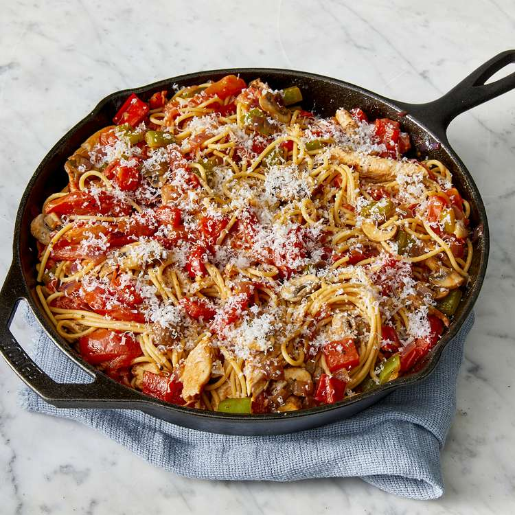

Lasagna

Description
Everyone loves a good lasagna, right? It's a great way to feed a crowd and a perfect dish to bring to a potluck. It freezes well. It reheats well. Leftovers will keep you happy for days.
Ingredients
- 1 tbsp olive oil
- 1 onion (chopped), 2 garlic cloves (minced)
- 1 lb ground beef or pork
- 1 can (28 oz) crushed tomatoes, 2 tbsp tomato paste
- 1 tsp each: oregano, basil, thyme, salt, pepper
- 1 tbsp olive oil
- 1 cup ricotta cheese, 1 egg, ½ cup Parmesan, 2 tbsp parsley, pinch nutmeg
- 12 lasagne noodles, 2 cups shredded mozzarella
Ingredients
- Make Sauce: Sauté onion and garlic in oil, brown meat, add tomatoes, paste, and herbs. Simmer 30 min.
- Mix Cheese: Combine ricotta, egg, Parmesan, parsley, and nutmeg.
- Assemble: Layer sauce, noodles, cheese mix, and mozzarella in a baking dish.
- Bake: Cover and bake at 375°F (190°C) for 25 min, uncover and bake 20 min until golden.
- Serve: Let rest 10 min before slicing. Enjoy!
Home